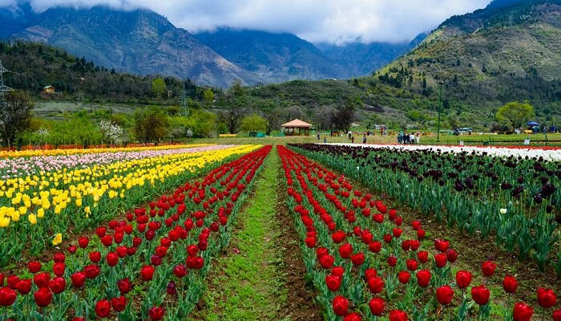
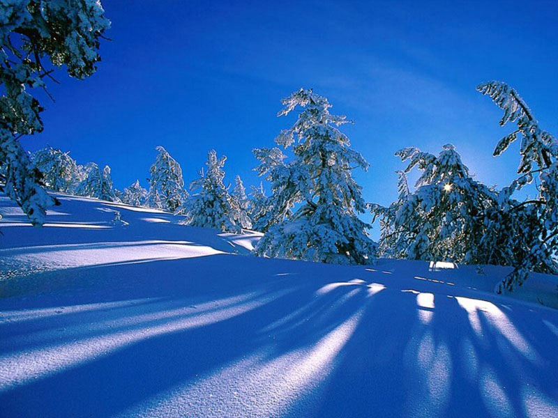
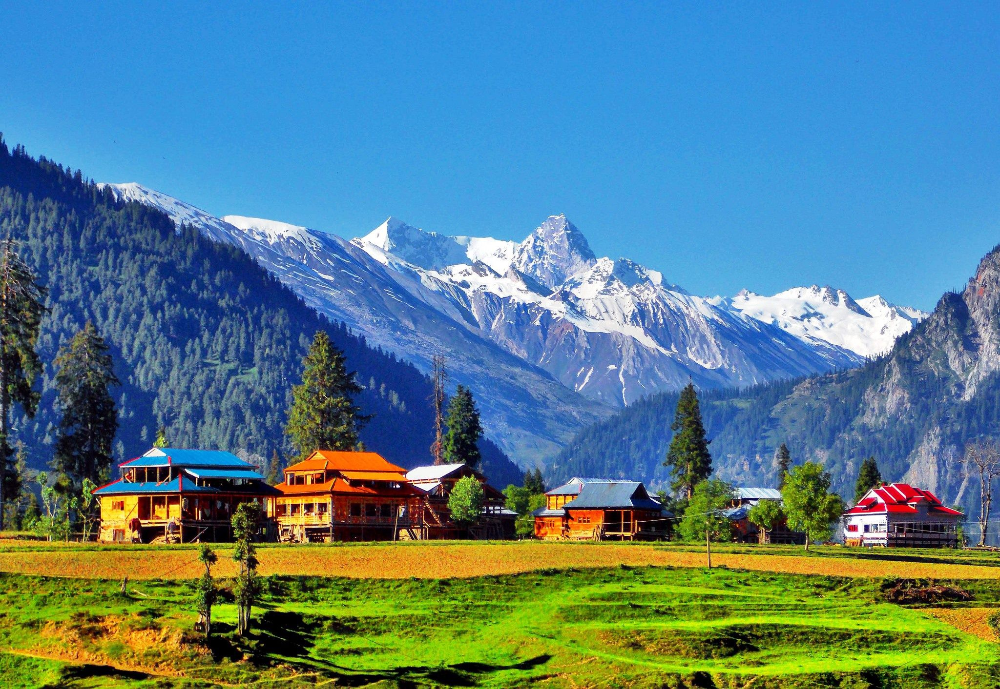

Kashmir Tour Packages
5Days/4Night
Jumbo Discount Price Rs.29,999/-
About the Destination
Jammu and Kashmir is the northernmost territory of the Indian state and is an amalgamation of 3 very different cultures and geographies.
Jammu is located on the southern edge of the region and is full of green pastures and picturesque sights. Jammu Airport is located at a distance of 8 km from the city centre, while Jammu Tawi is an important railhead in the region. The region is also well-known for being the abode of the renowned Vaishno Devi Temple.
Experience Kashmir
When you visit with a suitable Jammu and Kashmir tour package, you will be able to witness for yourself how the region has been a hot spot for various cultures to develop, due to which there is a vast difference of cultures in this small geographic location. The southern-most region, Jammu is a hub for the Hindu faith, with Kashmiri Pandits being the original inhabitants of the region.
Things to do in Kashmir:
- Visit the Vaishno Devi Temple:
- Go Skiing in Gulmarg:
- Visit Dal Lake:
- Biking in Ladakh
- The Monuments of Kargil
Best Time to Visit Kerala
A Jammu and Kashmir package for the months of April-May-June can let you enjoy the wonders of the region without having to go through the extremely cold times of the area. There are several Jammu and Kashmir packages that can be opted for during this time of the year. On the other hand, for certain destinations such as Gulmarg, Sonmarg, and so on, where the charm comes alive with the winter months, November to February would be the best time to plan your trip. Again, one can easily find the perfect Jammu and Kashmir package for the right time online.

|
|  |
 |
 |
 |
|